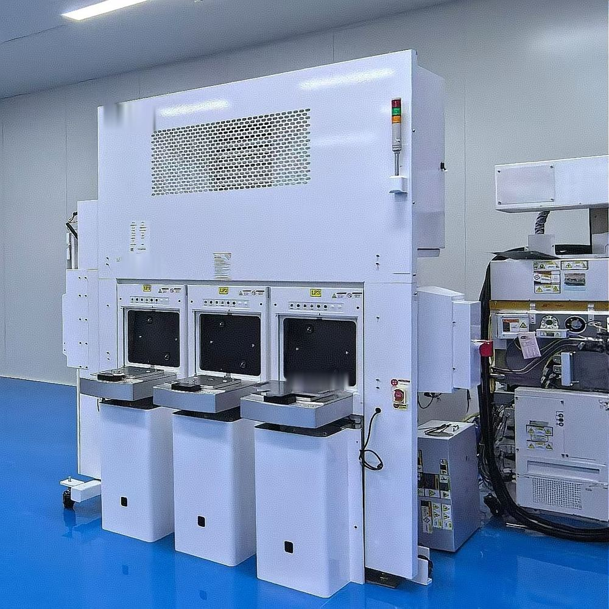
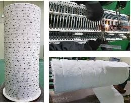
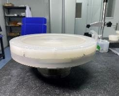

エッチ・
ドライエッチ・ウェット・炉、
主要 OEM の装置に対応。
主要 OEM の
AMAT・Lam・Mattson・TEL・KOKUSAI の据付・リファービッシュ・修理・定期保守・改造。
エッチ・ウェット・炉
ドライエッチ・ウェット・炉の装置サービス



ドライエッチ
- AMAT: eMAX · DPS G2 · Minos · Mesa · Sym3
- Lam Research: コンダクター・誘電体エッチ
- ドライストリップ：Mattson Suprema
- TEL: SCCM · 85 DD · DI · DS
チャンバー部品：ゲルキット・カムナット・E シール・RF ストラップ
ウェット
- Lam（SEZ）枚葉洗浄：101・102・201・203・223・323／DV28・DV34・DV38・DVP
炉ヒーター（縦型炉）
- TEL 縦型炉：ALPHA-8S・8SE・303i／INDY・FORMULA
KOKUSAI・TEL の 8／12 インチ各プラットフォームのヒーターを修理・リファービッシュ・性能アップグレード。
ウェットエッチ ― スピンベース オーバーホール

- 分解・点検
- 水平度・偏心・動バランス・抵抗値の測定
- 修理・SOP 組立
- 標準・高温 SPM・裏面洗浄 各タイプ
見える化と作業者サインにより、全工程を記録・追跡できます。
対応範囲・納期・保証条件は案件ごとに確認し、お見積りにてご提示します。修理品・リファービッシュ品はメーカーの認定品ではありません。交換部品に非純正品を使用する場合は、お見積り時に明示し、お客様のご承認を得たうえで使用します。記載のメーカー名・型式は対象装置を示すためのものであり、各メーカーとの提携やメーカー純正サービスを意味するものではありません。記載の会社名・製品名は各社の商標または登録商標です。